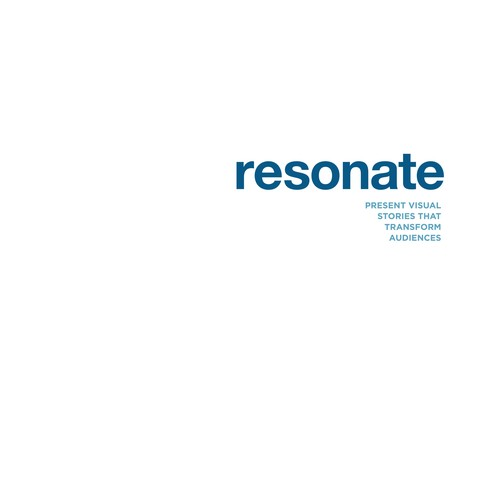
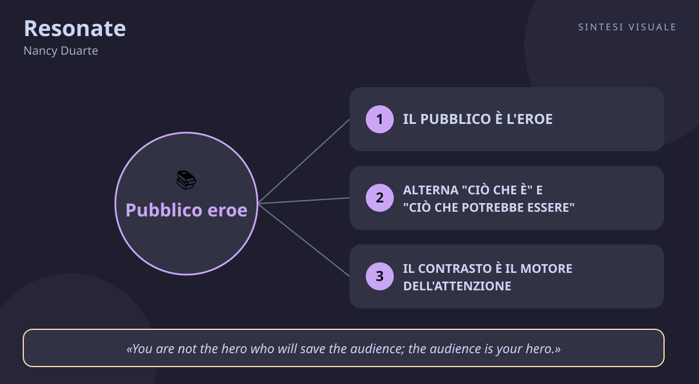

Resonate
Nancy Duarte · Public speaking
«Resonate»
- Pubblico eroe
- Cio che e e cio che potrebbe essere
- Contrasto
- Chiamata allazione
🧭Introduzione
Nancy Duarte è la fondatrice di Duarte Design, lo studio che ha creato le slide della presentazione di Al Gore diventata il documentario premio Oscar Una scomoda verità. Per anni ha analizzato centinaia di grandi discorsi — da Martin Luther King a Steve Jobs — fino a trovare la forma nascosta che li accomuna.
Perché questo libro conta oggi: viviamo sommersi da slide noiose, call infinite e pitch che nessuno ricorda. Resonate insegna che il problema non sono mai le slide, ma la storia che manca dietro le slide. È utile a chiunque debba convincere qualcuno: manager, venditori, insegnanti, studenti, professionisti e chi prepara un colloquio o una presentazione di lavoro.
📘Riassunto
La scintilla centrale: le presentazioni falliscono perché chi parla si mette al centro; funzionano quando il pubblico diventa l'eroe di una storia e chi parla fa da mentore che lo guida verso il cambiamento.
La struttura logica segue il percorso del libro: capire perché la risonanza genera cambiamento; imparare la struttura delle storie e del viaggio dell'eroe; conoscere il pubblico, segmentarlo e creare un terreno comune; costruire il contrasto e trasformare i dati in significato; ordinare i messaggi e chiudere con un "nuovo paradiso" memorabile. Ogni grande discorso alterna due poli — what is (la realtà di oggi) e what could be (il futuro possibile) — creando un contrasto che tiene viva l'attenzione fino a una chiamata all'azione chiara.
Il punto di svolta è lo sparkline: il grafico dell'andamento emotivo di discorsi celebri (come "I Have a Dream" di King o il lancio dell'iPhone di Jobs), che mostra visivamente come i grandi comunicatori oscillino tra ciò che è e ciò che potrebbe essere. Una volta visto, non ascolterai più nessun discorso allo stesso modo.
L'eredità oggi: Resonate è diventato il manuale di riferimento per lo storytelling professionale, fratello maggiore di slide:ology (sullo stesso tema visivo) e alleato naturale di Made to Stick degli Heath. Il metodo "pubblico-eroe" è usato in aziende, TED Talk e università di tutto il mondo.
💡Concetti chiave
- Il pubblico è l'eroe, tu sei il mentore: smetti di esibirti, inizia a guidare chi ascolta.
- Alterna "ciò che è" e "ciò che potrebbe essere": l'oscillazione tra presente e futuro crea la tensione che spinge ad agire.
- Il contrasto è il motore dell'attenzione: il cervello nota le differenze, non la monotonia.
- Conosci il tuo eroe: segmenta il pubblico e parti da un terreno comune.
- Trasforma i dati in significato: taglia senza pietà tutto ciò che non serve al messaggio.
- Chiudi con una chiamata all'azione chiara: senza un invito concreto, la presentazione non trasforma nulla.
📖1. Il pubblico è l'eroe, tu sei il mentore
- Definizione nella struttura del viaggio dell'eroe, chi parla non è il protagonista ma la guida: è il pubblico a dover attraversare la soglia, affrontare il cambiamento e tornare trasformato.
- Esempio a un colloquio di lavoro racconti solo i tuoi successi e l'azienda si annoia; se invece mostri come le tue competenze risolvono il loro problema, diventi il mentore di cui hanno bisogno.
- Come applicarlo prima di preparare le slide, scrivi su un foglio chi è il tuo pubblico-eroe, qual è la sua sfida e cosa gli offri (guida, strumenti, fiducia). Apri il discorso parlando di lui, non di te.
- Errore comune aprire con "vi parlo di me e della mia azienda": mette te al centro e spegne l'empatia nei primi trenta secondi.
- Collegamento Joseph Campbell e il viaggio dell'eroe; Chris Anderson (TED) dice lo stesso: l'obiettivo di un talk è regalare un'idea al pubblico, non esibire se stessi.
📖2. Alterna "ciò che è" e "ciò che potrebbe essere"
- Definizione la "forma della presentazione" è un'oscillazione continua tra la realtà attuale (problemi, costi, rischi) e il futuro possibile (benefici, visione, soluzione), fino alla risoluzione finale.
- Esempio "Oggi perdiamo tre ore al giorno in riunioni inutili (ciò che è); immaginate se ne bastasse una da trenta minuti e il resto tornasse al lavoro vero (ciò che potrebbe essere)" — e avanti così, alternando i due quadri.
- Come applicarlo struttura ogni sezione con coppie esplicite presente/futuro; disegna su carta la tua "sparkline" e controlla che l'alternanza ci sia davvero, non solo nella tua testa.
- Errore comune restare solo sul "ciò che è" (report piatto di dati) o solo sul "ciò che potrebbe essere" (spot entusiasta senza credibilità): in entrambi i casi manca la tensione che spinge ad agire.
- Collegamento Martin Luther King in "I Have a Dream" è il caso-studio del libro: ingiustizia presente contro sogno futuro, ripetuti in onde crescenti.
📖3. Il contrasto è il motore dell'attenzione
- Definizione il cervello nota le differenze, non la monotonia: accostare opposti (problema/soluzione, prima/dopo, rischio/opportunità) mantiene alta l'attenzione e rende memorabile il messaggio.
- Esempio mostrare due foto affiancate — l'ufficio disordinato di oggi e quello ordinato dopo la riorganizzazione — comunica più di dieci punti elenco.
- Come applicarlo per ogni messaggio chiave crea una coppia di contrasto (parole, immagini o numeri); alterna toni emotivi: gravità del problema, entusiasmo della soluzione.
- Errore comune slide tutte uguali, tono monocorde, elenco di fatti senza picchi: il pubblico dopo dieci minuti smette di ascoltare perché non percepisce nulla in gioco.
- Collegamento Chip e Dan Heath (Made to Stick, già trattato in questa rubrica): il principio del "gap" di curiosità funziona allo stesso modo, aprendo una lacuna che il pubblico vuole colmare.
📖4. Conosci il tuo eroe
- Definizione la risonanza nasce dall'empatia: bisogna studiare valori, bisogni e resistenze del pubblico e partire da ciò che già condivide con te per poi allargare il consenso.
- Esempio prima di proporre un nuovo software al team, chiedi quali fatiche quotidiane vivono (doppi inserimenti, errori, straordinari) e apri il discorso da lì, non dalle funzioni del prodotto.
- Come applicarlo dividi il pubblico in segmenti (chi decide, chi usa, chi resiste), annota per ciascuno bisogni e obiezioni, e prepara una frase di terreno comune: "come voi, anch'io credo che...".
- Errore comune preparare un discorso unico "per tutti": parla a nessuno, perché ignora che dirigenti e tecnici temono cose diverse.
- Collegamento Dale Carnegie (Come trattare gli altri e farseli amici): parla all'altro nei termini dei suoi interessi; Robert Cialdini: la somiglianza e la condivisione creano persuasione.
📖5. Trasforma i dati in significato
- Definizione i fatti da soli non muovono nessuno: vanno selezionati, semplificati e trasformati in storie e immagini; il resto — per quanto ti piaccia — va tagliato senza pietà ("uccidi i tuoi beniamini").
- Esempio invece di una tabella con quaranta righe di vendite, racconta la storia di un singolo cliente-tipo che con il tuo prodotto ha risolto un problema concreto, e tieni un solo numero-simbolo a supporto.
- Come applicarlo per ogni slide chiediti "e quindi? cosa deve sentire o fare il pubblico?"; elimina tutto ciò che non serve a quella risposta; una sola idea forte per slide, leggibile in tre secondi.
- Errore comune la sindrome del "tutto e il lavello della cucina": infarcire le slide per paura di dimenticare qualcosa, e così il messaggio annega nel rumore.
- Collegamento il caso Cisco raccontato da Duarte: da presentazioni piene di funzioni a storie di piccoli imprenditori aiutati dalla tecnologia — e le vendite decollarono.
📖6. Chiudi con una chiamata all'azione chiara
- Definizione una presentazione senza invito finale esplicito è intrattenimento, non comunicazione che trasforma: il pubblico deve sapere esattamente cosa fare, quando e perché.
- Esempio chiudi un corso interno non con "grazie dell'attenzione" ma con "da lunedì, per due settimane, provate la riunione da 25 minuti: qui il modello da scaricare, ci rivediamo venerdì per i risultati".
- Come applicarlo scrivi la chiamata all'azione in una frase sola e mettila nell'ultima slide; rendila concreta, misurabile e immediata (entro quando, con quale primo passo).
- Errore comune finali vaghi ("pensateci", "spero vi sia piaciuto") che lasciano il pubblico ispirato per cinque minuti e fermo come prima.
- Collegamento Steve Jobs chiudeva i keynote con un "one more thing" che era insieme sorpresa e invito; John F. Kennedy citato nel libro: "l'unica ragione per tenere un discorso è cambiare il mondo".
💬Citazioni da ricordare
"You are not the hero who will save the audience; the audience is your hero." — Conta perché ribalta in una frase tutto il tuo modo di preparare un discorso: smetti di esibirti, inizi a servire.
"The audience does not need to tune themselves to you - you need to tune your message to them." — Conta perché la risonanza è accordatura: sei tu a dover entrare nella frequenza del pubblico, non il contrario.
"Your ability to shape your future depends on how well you communicate where you want to be when you get there." — Conta perché lega il successo futuro alla chiarezza con cui sai raccontare la meta: chi non sa comunicarla, non ci arriva.
Il pubblico è l'eroe, tu sei il mentore: cambia postura e cambia l'effetto di ogni tua parola. E il contrasto tra ciò che è e ciò che potrebbe essere è la corrente che porta il pubblico fino all'azione: senza tensione, nessuna trasformazione.
🌍Esempi di oggi
- La riunione che convince il capo — Devi chiedere budget per un progetto: invece di elencare funzioni, alterni "oggi perdiamo X ore" e "con questo strumento recupereremmo Y", e chiudi con una richiesta precisa. È la sparkline applicata al lunedì mattina.
- Il messaggio vocale di famiglia — Devi convincere parenti scettici a cambiare meta delle vacanze: parti da ciò che condividete (budget, riposo), racconti una mini-storia di chi ci è stato e proponi un primo passo concreto. Pubblico-eroe anche a Natale.
- Il post che buca i social — Un carosello Instagram funziona quando apre un contrasto ("prima/dopo", "errore/soluzione") e chiude con una call to action chiara ("salva il post", "prova per 7 giorni"): è Resonate in formato verticale.
🛠️Azioni pratiche
- Disegna la tua sparkline: prima della prossima presentazione, su un foglio segna per ogni blocco se racconta "ciò che è" o "ciò che potrebbe essere", e pareggia le onde.
- Riscrivi apertura e chiusura: apri partendo dal pubblico ("voi state affrontando...") e trasforma l'ultima slide in una chiamata all'azione di una sola frase con una scadenza.
- Taglia senza pietà: dimezza slide o punti, tieni un'idea per slide leggibile in tre secondi e prova a voce alta cronometrandoti.
💎Da portare a casa
Non sono le slide a convincere: è la storia in cui il pubblico si riconosce eroe a farlo agire.
Vuoi approfondire? Rispondi in chat con il numero del concetto (1–6) che vuoi esplorare — pubblico-eroe, contrasto presente/futuro, attenzione, empatia, dati che raccontano o chiamata all'azione — oppure chiedimi come applicare il metodo a una tua presentazione reale: riunione, colloquio, pitch o esame.
🖼️In un colpo d’occhio

Tocca l’immagine per ingrandirla.